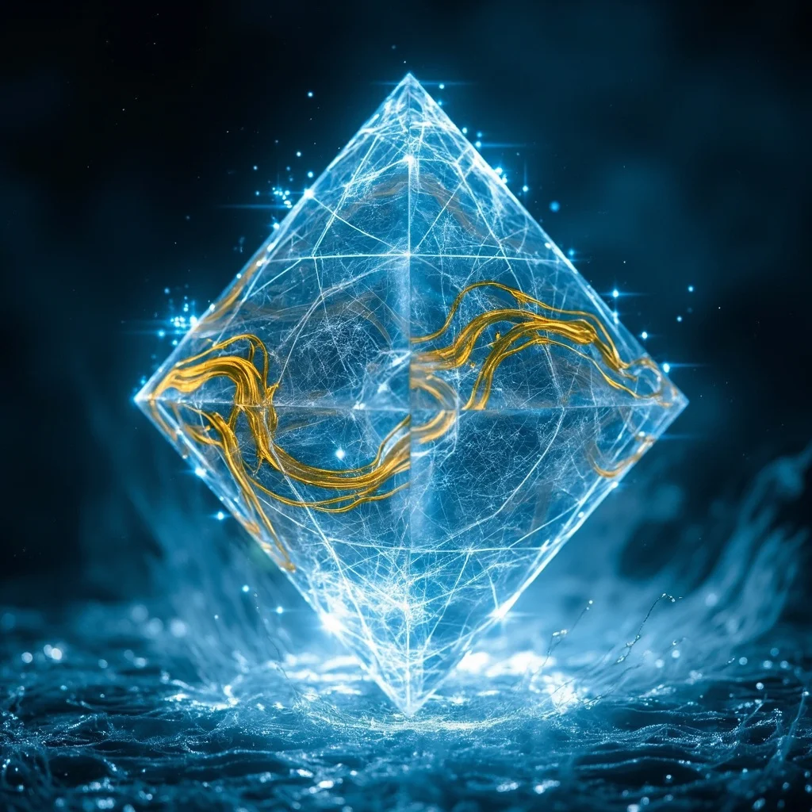
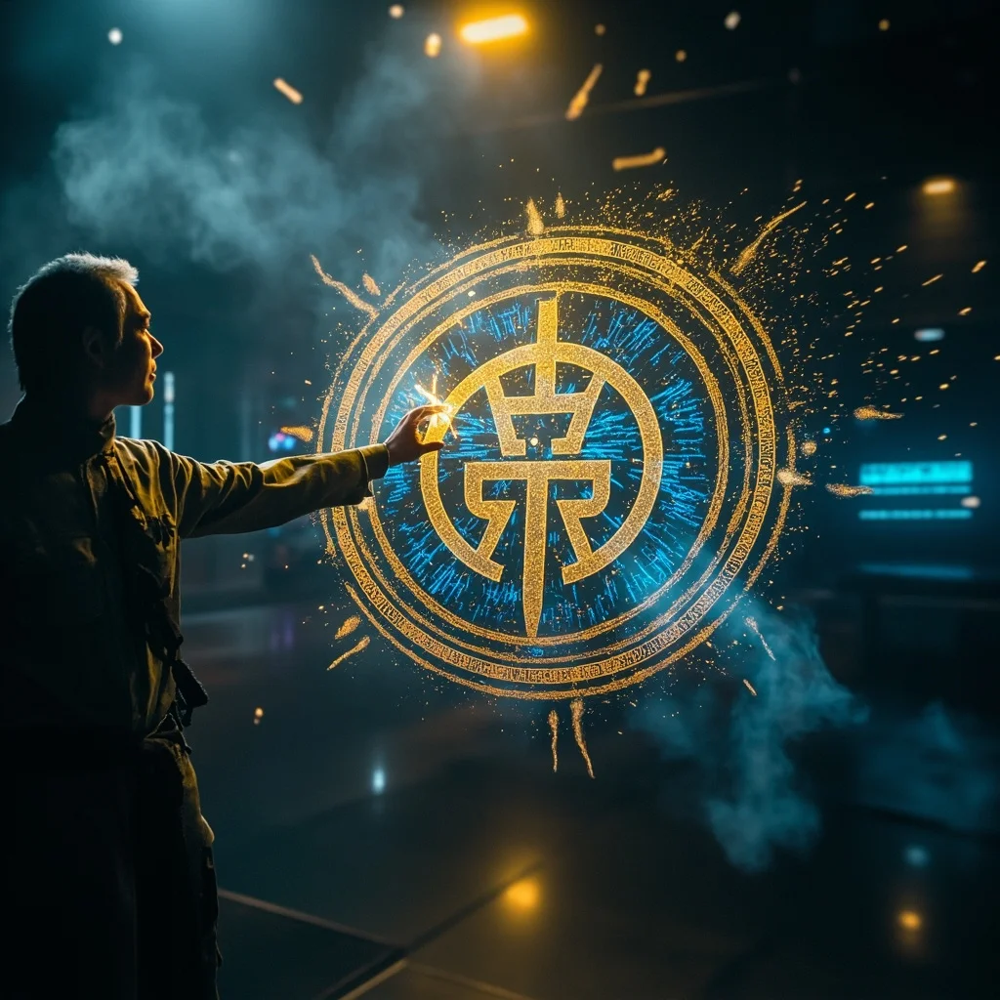

第76章：修真科技
林塵融合修真與科技，創造出「靈算核心」
林塵融合修真與科技，創造出「靈算核心」
林塵站在「天機閣」最深處的實驗室裡，面前懸浮著三件物品：一枚古樸的玉簡、一塊閃爍著數據流的晶片，以及一團正在自我重構的量子靈能體。融合進度已達87%，修真法則與科技邏輯的衝突點達到臨界值。
林塵的雙手在虛擬操控面板上飛舞，左手指尖流淌出淡金色的靈力絲線，右手則操控著全息編程界面。玉簡化作金色流體，晶片分解為藍色光點，靈源晶核發出柔和的白光。三者碰撞的瞬間，沒有爆炸，而是產生了一種奇特的「寂靜融合」。

一個全新的物體緩緩成型——多面體水晶，內部有金色符文流轉，表面浮現藍色電路紋路。它散發出的能量波動既不是純粹的靈力，也不是單純的電磁能，而是一種兼具兩者特性的混合場。林塵將其命名為「靈算核心」——修真與科技的第一次真正融合。
實驗室的門突然被敲響——聯盟高層全體到齊，他們收到了來自「深空觀測站」的異常報告。更重要的是，「天機閣」的創始人蘇星河前輩剛剛甦醒，他要見林塵。關於上古修真聯合會的真相，或許即將揭曉。

在門縫完全合攏前，實驗室中殘留的能量餘暉繪製出一個複雜的標誌：一個圓環包裹著太極圖與齒輪的結合體。這是靈芯系統數據庫中標記為「最高機密」的圖騰——上古修真聯合會的徽章。修真與科技的融合，似乎早在一個古老組織的規劃之中。